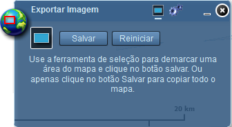

Exportar Imagem
A ferramenta Exportar Imagem permite salvar imagens nos formatos jpeg (com ajuste de nível de qualidade), png e bmp e oferece a opção para salvar arquivo contendo imagem e sua geolocalização.

Selecionar área do mapa: seleciona área do mapa a ser exportado;
Salvar: abre caixa de diálogo para salvar arquivo;
Reiniciar: remove a seleção realizada.

Formato: define formato de exportação da imagem: jpeg, png ou bmp;
Qualidade: define nível de qualidade da imagem (opção visível somente para formato jpeg);
Salvar como arquivo zip com geolocalização: habilitado, salva arquivo no formato zip, contendo imagem e arquivo com geolocalização;
Fechar: fecha janela da ferramenta Exportar Imagem;
Minimizar: minimiza janela da ferramenta Exportar Imagem.